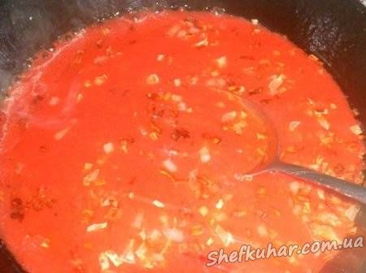
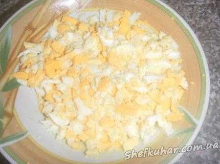

Зелений борщ
Інгредієнти: Свинина нежирна - 0,5 кг Картопля - 5 шт. Морква - 1 шт. Квашений буряк - 1 маленький. Цибуля - 1 головка Яйця (зварені круто) - 5 шт. Щавель - 200 г Квасоля - 1/2 склянки. Зелень - петрушка, кріп Сіль, перець. 1 ч.л. цукру.
Кулінарний рецепт зеленого борщу.
М'ясо залити водою і довести до кипіння. Зняти піну і варити близько 30 хвилин.
Додати квасолю, звісно якщо вона дрібненька. Тому що є квасоля, яка вариться навіть довше за м'ясо.
Як закипить, додати потерту морку та буряк і нарізану картоплю. Варити близько 20 хвилин.
За цей цас приготувати зажарку. Обжарити цибулю, та додати томатний сік і цукор.

Зварити яйця. Та нарізати кубиками. Добавити в зажарку. Зняти соворідку з вогню.

Додати у каструлю зажарку, проварити 5 хвилин.
Додати щавель та нарізану зелень. Як тільки борщ закипить, його слід зняти з вогню (щоб щавель не розварився).
Дати настоятися близько 15 хвилин.
Борщ готовий.
Смачного!